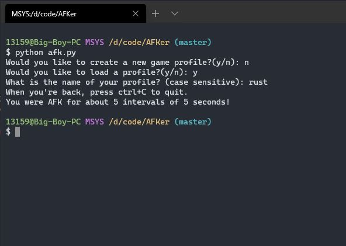
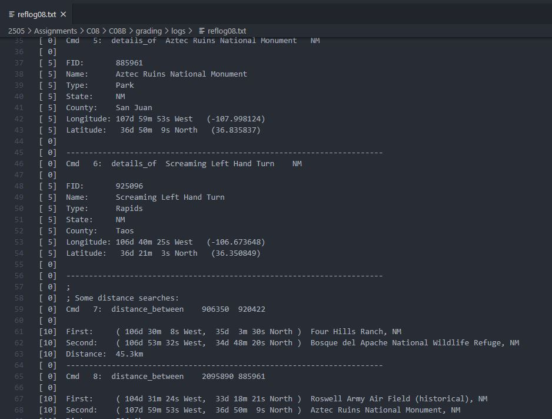

Projects
"AFKer"
This is a small, simple python program for going "afk" (Away From Keyboard) in video games. Features include the ability to choose the amount of time between each in game movement, check for respawn button and savable profiles for each game. While this project my not be insanely complicated, it is one of my first personal projects that I successfully made based off of a problem that I was facing (getting kicked for being AFK).
~See the code~
Rocket League Self Driving Car
The title of this project is a bit misleading as the car does not quite drive itself yet. However, with the win32api, OpenCV and Numpy this program can successfully identify and track the ball on the screen. This is currently a work in progress and in the future I hope to implement a convolutional neural network and produce a data set to train a model. I have already written a function to record my key inputs (key_list.py) I just need to do some more research.

~See the code~
GIS System
This is the final project written in C from my computer organization class. We were provided .txt files with anywhere from 100 to 25000 geographical information system records. The task at hand was to parse these GIS files and apply commands specified in provided .txt files that indicated whether to report the total number of records in the database that match a certain name and state, provide the details of a given feature name and state, or calculate the orthodromic distance between two locations. The results of these commands were then written to a log file. Below is an example of one of these log files. Since this is a school project I cannot make the repository public on my github, howver if you wish to see the code, click the link below and enter your github username and I'll share with you as soon as I can.
~Request the code~
Tower of Hanoi Solver
This was one of the larger projects from my Java data structures class. The project displays a tower of hanoi puzzle with any desired amount of disks and solves it recursively. While this project is pretty straightforward, it demonstrates a fair amount of object oriented programming. Since this is a school project I cannot make the GitHub repository public so if you wish to see the code, click the link below, enter your GitHub username and I'll share it with you as soon as I can.
~Request the code~Contact me:
Email: liamm18@vt.edu